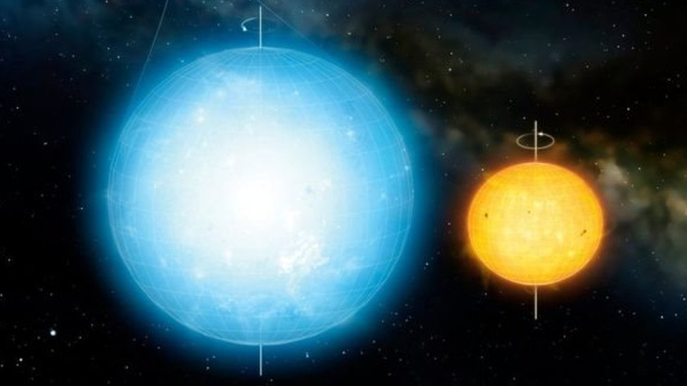

ดาวฤกษ์ คือ วัตถุท้องฟ้าที่สามารถเปล่งแสงและพลังงานได้ด้วยตนเอง พลังงานเกิดจากปฏิกิริยานิวเคลียร์ฟิวชันภายในแกนกลาง ซึ่งเปลี่ยนไฮโดรเจนให้เป็นฮีเลียม ดาวฤกษ์มีขนาด มวล สี และอุณหภูมิแตกต่างกันมาก ดวงอาทิตย์ก็เป็นดาวฤกษ์ดวงหนึ่ง